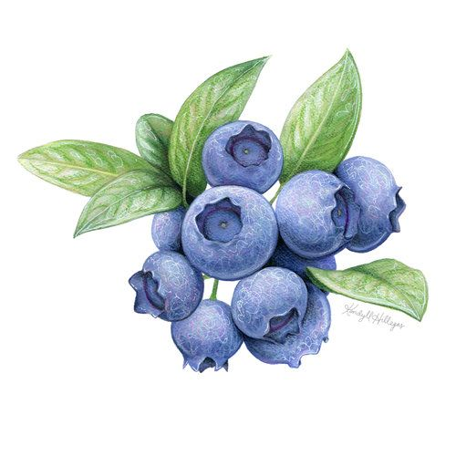

- Берем одну большую миску и загружаем в нее все ингредиенты для теста капкейков, то есть: муку, молоко, белки, соль, разрыхлитель, сливочное масло, сахар, ванильный сахар, голубику;
Предварительно разогреваем духовку до 200 градусов
- Голубику можно обработать в измельчителе, но не сильно, чтобы она не превратилась в кашу. Немного цельных ягодок голубики оставляем для украшений;
- Все наши ингредиенты в форме перемешиваем миксером. 3 других белка и еще 150 грамм сахара вместе со столовой ложкой ванильного — для безе, его делаем чуть позже;
- Тесто разливаем по формам и, так как оно должно получиться достаточно густым, можно это сделать столовой ложной или небольшим половником;
- Ставим форму в духовку и выпекаем 20 минут при 180 градусах;
- В это время приступаем к подготовке безе. Тщательно отделяем белки от желтков, выливаем их в форму, в которой будем взбивать. Включаем миксер на всю мощность и взбиваем пару минут, чтобы появилась такая масса, которая останется недвижимой, если опрокинуть форму. Тогда добавляем те 150 грамм сахара вместе с ванильным сахаром и взбиваем еще пару минут;
- Спустя 20 минут, достаем практически готовые капкейки, вынимаем их из формы;
- Спустя 20 минут, достаем практически готовые капкейки, вынимаем их из формы;
- Снижаем жар духовки до 120 градусов и ставим туда противень с капейками на 10–15 минут, чтобы безе покрылось легкой корочкой, но ягоды, тем не менее, остались такими же свежими, а не сварились.

Наслаждаемся вкусностями!
Предыдущая страница
На главную страницу